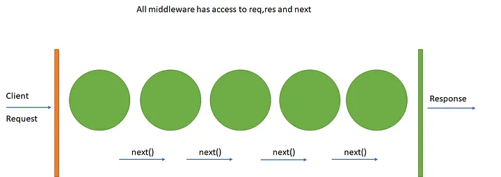

08 - JS Monorepo : Validation
Objectifs
- Comprendre comment valider la saisie de l'utilisateur.
- Retourner des réponses appropriées en cas d'erreur du client.
Prérequis
- 1
Valider la quête suivante
Quêtes liées - 2
Comprendre le principe de middleware dans Express
Toutes les fonctions
(req, res, next) => {}que tu as vu jusqu'à maintenant sont des middlewares : des programmes exécutés entre la réception de requête et l'envoi de la réponse HTTP.
- 3
Être à l'aise avec l'utilisation de plusieurs middleware sur une route
typescriptconst step1: RequestHandler = (req, res, next) => { req.message = "J'ai passé l'étape 1"; next(); }; const step2: RequestHandler = (req, res, next) => { req.message += " et l'étape 2"; next(); }; const lastStep: RequestHandler = (req, res) => { res.send(req.message); }; // one route, 3 middlewares app.get("/justToTest", step1, step2, lastStep);Chaque middleware modifie
req.messageet passe ensuite au suivant avecnext(). La réponse finale sera"J'ai passé l'étape 1 et l'étape 2".
Sommaire
Introduction
Dans les quêtes précédentes, tu as mis en place une gestion complète de données qui permet à l'utilisateur de saisir des informations côté client pour qu'elles soient traitées côté serveur.
La validation des données saisies par l'utilisateur est une étape cruciale dans le développement d'applications. Elle permet de s'assurer que les informations sont correctes et cohérentes avant de les traiter. Dans cette quête, tu vas explorer l'importance de la validation de la saisie utilisateur et différentes méthodes pour la mettre en oeuvre dans ton projet Wild Series en tant que middleware.
server/
├── database/
│ └── // ✅
├── src/
│ ├── modules/
│ │ ├── category/
│ │ │ ├── categoryActions.ts // ✌️
│ │ │ └── categoryRepository.ts // ✅
│ │ └── ...
│ ├── app.ts // ✅
│ ├── main.ts // ✅
│ └── router.ts // ✅
├── tests/
│ └── // bientôt
├── .env
└── .env.sample
Pourquoi valider la saisie utilisateur ?
Avant d'aller plus loin, examinons un exemple concret. Imaginons que nous travaillons sur une application de gestion de films (ce n'est pas très loin des séries). Nous aurions une table de base de données pour stocker les détails des films, telle que définie ci-dessous :
create table movies(
id int primary key not null auto_increment,
title varchar(255) not null,
director varchar(255) not null,
year varchar(255) not null,
color varchar(255) not null,
duration int not null
);
Dans cet exemple, tous les champs de la table sont obligatoires (NOT NULL). Ainsi, si un utilisateur oublie de saisir l'une de ces informations, cela peut entraîner des erreurs lors de l'insertion des données dans la base de données.
La bonne erreur
S'il existait une API pour insérer un nouveau film dans cette table sans validation, voici ce que tu pourrais faire :
- Envoyer une requête POST à
/api/moviesavec tous les champs requis (title,director...). - Envoyer une requête avec un champ manquant et observer la réponse du serveur.
La première requête devrait réussir, tandis que la seconde échouerait avec une erreur 500 (ER_BAD_NULL_ERROR). Cependant, retourner une erreur 500 pour des données manquantes n'est pas la meilleure pratique.
Pourquoi éviter l'erreur 500 ?
L'erreur 500 indique une erreur côté serveur ("Internal Server Error"), ce qui signifie que le serveur a rencontré un problème inattendu, et qu'aucune requête du même type ne sera traitée.
Le problème était ici "attendu" : la requête était mal formulée, avec une donnée manquante. Pour détecter ce type d'erreur, tu dois valider les données de req.body avant de les insérer dans la base de données. En cas de données invalides, c'est une erreur 4xx (erreur côté client) que tu dois produire : cela permet au client web de savoir que la requête doit être modifiée pour être traitée par le serveur. Probablement une erreur 400 Bad Request.
Comment valider les données (et où) ?
La validation des données peut être effectuée à deux niveaux : côté client et côté serveur. Si tu devais n'en choisir qu'un, tu devrais opter pour la validation côté serveur.
-
Côté client : La validation côté client consiste à vérifier les données saisies dans les formulaires avant leur envoi. Cela garantit une meilleure expérience utilisateur en empêchant les erreurs dès le départ.
-
Côté serveur : La validation côté serveur est essentielle pour garantir la sécurité, car un utilisateur malveillant peut contourner les vérifications côté client. Elle consiste à s'assurer que toutes les données nécessaires sont présentes et valides avant de les traiter.
Utiliser des middlewares Express pour la validation
Dans ton projet Wild Series, créé une action validate dans server/src/modules/categoryActions.ts :
// ...
const validate: RequestHandler = (req, res, next) => {
type ValidationError = {
field: string;
message: string;
};
const errors: ValidationError[] = [];
const { name } = req.body;
// put your validation rules here
if (errors.length === 0) {
next();
} else {
res.status(400).json({ validationErrors: errors });
}
};
// Export them to import them somewhere else
export default { browse, read, edit, add, destroy, validate };
En l'état, cette action ne fait aucune validation : un tableau d'erreurs (errors) est initialisé vide, et s'il reste vide (errors.length === 0) le middleware passe le relais au "suivant" (next()).
Si le tableau d'erreurs n'était pas vide, le else serait exécuté et la réponse serait envoyée immédiatement avec un statut 400. Les traitements suivants ne seraient alors pas exécutés.
Tu verras dans les parties suivantes comment détecter des erreurs. Pour l'instant, ton action de validation existe et est exporté.
Modifie server/src/router.ts comme suit :
router.get("/api/categories", categoryActions.browse);
router.get("/api/categories/:id", categoryActions.read);
-router.put("/api/categories/:id", categoryActions.edit);
+router.put(
+ "/api/categories/:id",
+ categoryActions.validate,
+ categoryActions.edit,
+);
-router.post("/api/categories", categoryActions.add);
+router.post("/api/categories", categoryActions.validate, categoryActions.add);
router.delete("/api/categories/:id", categoryActions.destroy);
En ajoutant ainsi ton action validate en tant que middleware sur les routes PUT et POST, tu en fais une étape qui est exécutée avant les middlewares edit et add : les données seront traitées (éditeés ou ajoutées) seulement si la validation passe !
Validation manuelle
Une première option est d'écrire toi-même ton code de validation. L'avantage est que tu n'utilises pas de dépendance supplémentaire. L'inconvénient est que tu dois implémenter toi-même ton code validation.
Une règle de validation peut être un code "simple", par exemple pour valider qu'un champ est défini :
if (name == null) {
errors.push({ field: "name", message: "The field is required" });
}
Un autre exemple pour varifier la longueur d'un champ texte :
if (name.length > 255) {
errors.push({ field: "name", message: "Should contain less than 255 characters" });
}
Ou l'âge d'une personne :
if (age >= 18) {
errors.push({ field: "name", message: "Should be an adult" });
}
Tu pourras rencontrer des règles plus complexes à base de regex :
const emailRegex = /[a-z0-9._]+@[a-z0-9-]+\.[a-z]{2,3}/;
if (!emailRegex.test(email)) {
errors.push({ field: 'email', message: 'Invalid email' });
}
Si ce code a piqué ta curiosité, tu peux t'initier aux regex ici : https://regexone.com/
Tu peux combiner plusieurs règles ensemble et construire des logiques sur mesure :
// ...
const validate: RequestHandler = async (req, res, next) => {
type ValidationError = {
field: string;
message: string;
};
const errors: ValidationError[] = [];
const { name } = req.body;
// put your validation rules here
+ if (name == null) {
+ errors.push({ field: "name", message: "The field is required" });
+ } else if (name.length > 255) {
+ errors.push({ field: "name", message: "Should contain less than 255 characters" });
+ }
if (errors.length === 0) {
next();
} else {
res.status(400).json({ validationErrors: errors });
}
};
// Export them to import them somewhere else
export default { browse, read, edit, add, destroy, validate };
Mais rapidement, sur des données plus complexes, ton code contiendra beaucoup de règles imbriquées. C'est le moment où tu auras envie d'utiliser des modules tiers.
Validation avancée avec des modules tiers
Pour simplifier et renforcer la validation, tu peux utiliser des bibliothèques comme joi ou express-validator (entre autres).
Un exemple de code utilisant joi pour la validation d'un film :
// ...
import joi from "joi";
const movieSchema = joi.object({
title: joi.string().max(255).required(),
director: joi.string().max(255).required(),
year: joi.string().max(4).required(),
color: joi.string().max(255).required(),
duration: joi.number().integer().required(),
});
const validate = (req, res, next) => {
const { error } = movieSchema.validate(req.body, { abortEarly: false });
if (error == null) {
next();
} else {
res.status(400).json({ validationErrors: error.details });
}
};
export default { /* ... */, validate };
Tu peux trouver plus d'informations dans la documentation officielle.
Récapitulatif
Dans cette quête, tu as appris l'importance de la validation des données saisies par l'utilisateur et comment la mettre en œuvre dans ton application Express en utilisant des middlewares. Tu as également vu comment implémenter une validation manuelle et comment utiliser des bibliothèques tierces pour faciliter ce processus.
La validation des données est essentielle pour garantir la sécurité et la cohérence des informations traitées par ton application.
Challenge
Applique les concepts de cette quête pour ajouter des validateurs sur les données de ton projet Wild Series. À toi de décider si tu veux faire des validations manuelles ou utiliser des outils tiers comme joi.